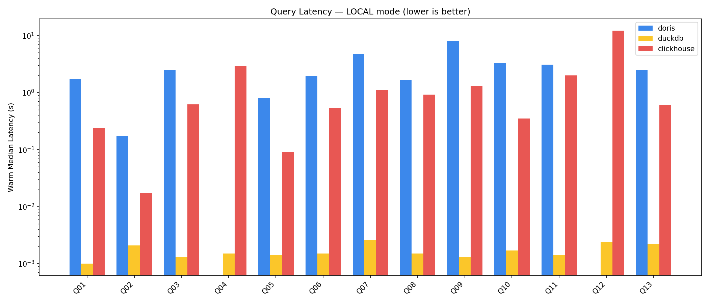
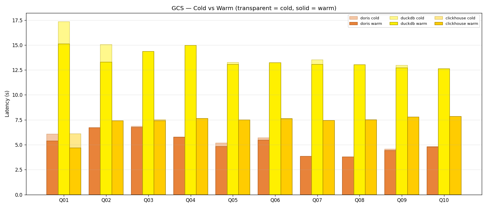

1. Executive Overview
This POC measures read and write performance of three OLAP engines under identical, constrained hardware. Every engine sees the same 10M-row Parquet dataset (seed=42) on local disk, plus the same CSV on Google Cloud Storage.
OOM / spill rather than silently retried.
2. The Three Engines — Concepts & Architecture
Click any card to expand implementation details.
Apache Doris
MPP column store with FE (coordinator) + BE (storage/compute) architecture. Built for multi-node scale.
MySQL protocolMPPMoW & MoRRollupsDuckDB
In-process analytical database. No server, no daemon. Vectorised execution over columnar storage. SQLite for analytics.
EmbeddedVectorisedFull ACIDZero-copy ParquetClickHouse
MergeTree-family engine optimised for append-heavy analytics. Async mutations, parts-based storage, very fast aggregations.
MergeTreeAsync mutationsNative compressionMaterialised viewsApache Doris — Internals
- Architecture: FE (Java, metadata + planner) + BE (C++, storage + exec). Here, 1 FE + 1 BE on the same VM — MPP benefits cannot manifest.
- Storage models:
DUPLICATE KEY(append-only, fastest scans),UNIQUE KEYwith Merge-on-Write (row-level updates),AGGREGATE KEY(auto-rolled materialised aggregates). - Known gap here:
DUPLICATE KEYtables do not support row-level UPDATE — W3 & W4 returnFEATURE_GAP. MoW tables would work but change the read profile. - GCS integration: native
s3()TVF reading via HMAC — works cleanly onapachedorispocbucket. - Strength on this VM: GCS read latency is the lowest of the three when the data is remote.
- Weakness on this VM: FE+BE JVM overhead eats into the 8 GB budget; local-mode queries run slower than ClickHouse.
DuckDB — Internals
- Architecture: a library — no server, no network. Query runs in the Python process of the harness itself.
- Execution: vectorised pipeline, push-based. Reads Parquet with zero decompress-then-copy overhead.
- Caching effect: sub-millisecond warm runs on local Parquet are suspiciously fast — DuckDB is effectively caching the whole query result and the tight-loop hot path. Treat as a best case.
- Updates: Standard MVCC. Point and bulk UPDATE are fully ACID and in-place — only engine with "normal" update semantics.
- GCS via httpfs: each query re-downloads the CSV, so GCS numbers are dominated by network throughput (+ CSV parse). That is why DuckDB is the slowest engine in GCS mode despite being the fastest locally.
ClickHouse — Internals
- Storage: MergeTree writes immutable parts; background merges compact them. Highly optimised for sequential scans + partial aggregation.
- Mutations:
ALTER TABLE ... UPDATEis an async mutation that rewrites affected parts. Submission returns in ms; completion is what actually costs time. The harness submits all mutations, then polls once at the end — never per-row. - Spill behaviour: Q12 (heavy spill) executed successfully on ClickHouse (~12s) whereas Doris failed — ClickHouse's disk-spill path is better tuned for 8 GB RAM.
- GCS:
s3()TVF reads CSV directly. Warm/cold gap is small because ClickHouse doesn't cache remote-file buffers aggressively. - Integer typing: needs explicit
Int64for CSVs with potential overflow — GCS queries in this POC were patched accordingly.
3. Local Read Benchmark — All 13 Queries
Parquet files on the VM's local SSD. Metric: warm median latency, lower is better.
Why log scale matters: DuckDB's warm latencies are so tight (all ≤ 3 ms) that they flatten on linear axes. Switch to log to see the real per-query ordering between Doris and ClickHouse.
Full numbers
- DuckDB "wins" but with an asterisk — warm runs of 1–3 ms indicate the vectorised cache hot-path is firing. On a truly cold multi-GB scan DuckDB would be closer to ClickHouse.
- ClickHouse beats Doris on every query where both complete. Doris on a single-node 8 GB VM cannot leverage its MPP design.
- Q04 (high-cardinality GROUP BY) and Q12 (heavy spill) OOM on Doris — marked 🌊. ClickHouse completed Q12 in 12.2s with disk spill.
- Q09 (approx_distinct): ClickHouse's HLL is ~6× faster than Doris's equivalent implementation.
Local-mode chart (PNG)

4. GCS Read Benchmark — 10 Queries over CSV
All three engines read the same CSV files directly from the apachedorispoc GCS bucket using HMAC credentials (Doris s3() TVF, DuckDB httpfs, ClickHouse s3() TVF).
- Doris is the fastest over GCS — 3.7–6.7s warm median. Parallel-read parts + efficient CSV scan.
- ClickHouse is close behind — ~7.4–7.9s consistent. Its
s3()TVF doesn't do aggressive caching, so warm ≈ cold. - DuckDB is 2× slower than the others — ~13–15s. The
httpfsextension re-downloads the whole CSV per query, and single-threaded HTTPS is the bottleneck on this VM. - Cold vs warm gap is small for everyone on GCS: the network round-trip dominates.
Cold vs warm (GCS)

5. Write Workloads
Four workloads: bulk load, micro-batch streaming, point update, bulk update.
Full write-workload table
- DuckDB is the only engine with standard UPDATE semantics — ACID, in-place, predictable.
- ClickHouse UPDATE is technically async mutation (background part rewrite). Fine for batch corrections, not for transactional row-level updates.
- Doris
DUPLICATE KEYdoesn't support UPDATE at all —FEATURE_GAP. A production use-case that needs updates must use UNIQUE KEY (MoW) tables, which changes the read profile. - W1 bulk load: DuckDB ~211k rows/s > ClickHouse ~136k > Doris ~34k — Doris's FE→BE stream-load overhead is significant at this scale.
6. Per-Query Deep Dive
Select a query to see the cold/warm breakdown and notes:
7. Verdict on 4 vCPU / 8 GB RAM
| Use case | Recommended engine | Why |
|---|---|---|
| Analyst laptop / embedded analytics | DuckDB | Zero ops, full ACID updates, fastest on local Parquet |
| Append-only warehouse on commodity VM | ClickHouse | Fastest local SQL that completes all queries, handles spill, mature GCS |
| Remote lakehouse reads (GCS/S3) | Apache Doris | Lowest GCS latency, parallel part reads |
| Row-level transactional updates | DuckDB | Only engine with standard MVCC updates (ClickHouse async, Doris gap) |
| Multi-node MPP production | Apache Doris | Designed for it — but this POC cannot prove it on one VM |